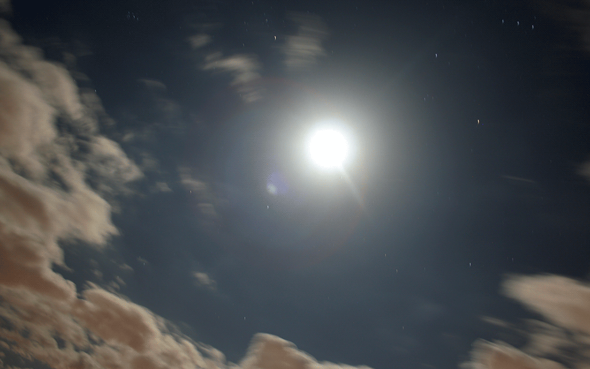

8. Moon dog
<
>

Laika's course was towards the Moon, but she never arrived. Her body is still drifting aimlessly in outer space. See if you can find her tracks in the constellations around.
click/drag mouse to reveal image
restart